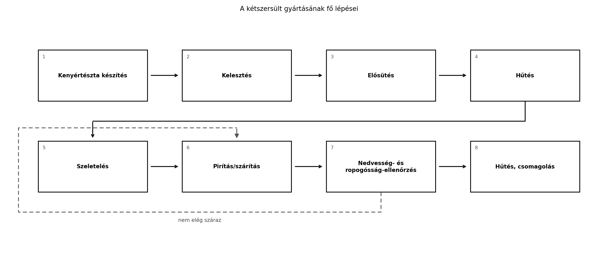

A pék munkájának egy része nem a frissen sütött termék aznapi eladásáról szól, hanem arról, hogy a kenyér és a sütőipari alapanyagok ne vesszenek kárba, és hosszabb eltarthatóságú, konyhai alapanyagként is hasznosítható termékeket készítsünk. A kétszersült és a zsemlemorzsa (morzsa) tipikusan ilyen termék: értékesítik, és közben csökkentik a hulladékot. A pékségben ezért ismerni kell a szárításos tartósítást, a szeletelő-, daráló- és szárítóberendezések biztonságos kezelését, valamint a késztermék nedvességtartalmának és tömegének ellenőrzését.
Ha például a hétvégi kenyérsütésből megmaradt szép, penészmentes, de már nem frissen értékesíthető kenyér, abból jó minőségű zsemlemorzsát lehet készíteni. Ha a kemence és a csomagolósor lehetővé teszi, szeletelt, kétszer sütött kenyeret is gyárthatunk, amely hónapokig eltartható. Ehhez azonban a nedvességtartalmat és a vízaktivitást megfelelően alacsonyra kell csökkenteni, különben a termék penészedik.
A következő ábra a kétszersült gyártásának fő lépéseit mutatja; a morzsa gyártásánál a pirítás helyett szárítás, majd darálás és osztályozás következik.

Az ábra szerint a pirítás/szárítás után, még a csomagolás előtt ellenőrizni kell a termék nedvességtartalmát és ropogósságát (7. lépés). Ha még nem elég száraz, a szeleteket vissza kell tenni a szárítóba; csak a megfelelőnek talált tétel kerül hűtésre és csomagolásra.
Definíció. A tartós sütőipari termék olyan sütőipari készítmény, amelynek eltarthatóságát elsősorban a vízaktivitás () csökkentésével, azaz alacsony nedvességtartalommal, valamint csomagolással és mikrobiális újraszennyeződés elleni védelemmel biztosítják.
A tartósítás legsikeresebb módja a sütőiparban a szárítás és a pirítás (kétszer sütés). A friss kenyér nedvességtartalma jellemzően 40–45 m/m%, a tartós kétszersülté 6–10 m/m% lehet (ellenőrizendő: termékelőírás). A vízaktivitás 0,6 alá csökkenthető, így a penészgombák és a baktériumok jelentős része nem tud szaporodni. Ezenkívül tartós kenyereknél használhatnak savanyú kovászt, hosszú, alacsony hőmérsékletű sütést, valamint nagy só- vagy cukortartalmat is, de a pék mindig a technológiai lap szerint dolgozik.
Figyelem. A tartósítás nem helyettesíti a higiéniát: a szárított terméket is megfelelő, tiszta körülmények között kell kezelni és csomagolni, különben a penészspórák a csomagolás után is kicsírázhatnak, ha a termék nedvességtartalma vagy a csomagolás nem megfelelő.
A tartós kenyerek közé sorolhatók például a sokáig frissen tartható rozskenyerek, a teljes kiőrlésű, savanyított kenyerek, valamint a kétszersült-szerű termékek (ellenőrizendő: a Magyar Élelmiszerkönyv sütőipari termékekre vonatkozó csoportosítása). Mindegyiknél ugyanaz a cél: a termék biztonságos, táplálkozási szempontból értékes és hosszabb ideig élvezhető legyen.
A kétszersült hagyományosan fehér vagy enyhén rozsos kenyérből készül. A kenyértésztát megsütik, kihűtik, szeletelik, majd a szeleteket másodszor is megsütik (pirítják vagy szárítják), amíg ropogósak és szárazak nem lesznek. Innen a „kétszer sült” elnevezés.
Gyártási lépések:
Előírás. A pirított termékekre az (EU) 2017/2158 rendelet akrilamid-csökkentő intézkedései vonatkoznak: a pirítást a legvilágosabb elfogadható színig végezzük, színskálával ellenőrizzük, a hőmérséklet/idő felső határát a technológiai lap rögzíti (ellenőrizendő: rendelet melléklete, referenciaszint). 6. Hűtés. A forró, ropogós szeletek nedvességet vehetnek fel a levegőből, ha azonnal csomagolják. Ezért a szeleteket tiszta, száraz, pormentes térben kell hűteni, és csomagolás előtt ellenőrizni a nedvességtartalmat (például nedvességmérő műszerrel vagy tömegállandóságig való szárítással). 7. Csomagolás. A kihűlt, száraz kétszersültet párazáró, élelmiszerrel érintkezésre alkalmas fóliába vagy papírba csomagolják. A csomagolásnak meg kell védenie a nedvességfelvételtől és a mechanikai sérülésektől.
HACCP-kritikus pontok a kétszersült gyártásánál:
Gépbiztonság. A szeletelőgépet, a pirítókemencét és a csomagológépet csak betanítás után, felügyelettel lehet kezelni. A szeletelőgép kését és adagolószerkezetét csak leállított, áramtalanított, újraindítás ellen biztosított gépen szabad tisztítani vagy állítani. A védőburkolatot, a reteszelést és a vészleállítót minden üzemkezdés előtt ellenőrizni kell.
Allergén. A hagyományos kétszersült összetevője a búzaliszt, ezért glutént tartalmaz. A búzaliszt allergén: az összetevőlistában a gabona nevét (búza, rozs) a többitől eltérő betűtípussal kiemeljük (pl. búzaliszt); a „glutén” szó önmagában nem helyettesíti a gabona megnevezését (ellenőrizendő: 1169/2011/EU 21. cikk és II. melléklet). Ha az üzemben gluténmentes terméket is készítenek, a kétszersült gyártását és csomagolását térben vagy időben el kell különíteni, és a munkafelületeket, késeket, edényeket a keresztszennyeződés elkerülésére tisztítani kell.
Definíció. A babajka a morzsagyártás céljára sütött (vagy erre a célra visszatartott), majd szárított kenyér(féle), jellemzően kenyérszeletekből vagy kenyérbélből készített alapanyag (ellenőrizendő: hazai szakkönyv, Magyar Élelmiszerkönyv). A babajka lehet durvára vágott, szeletelt vagy aprított kenyér, amelyet addig szárítanak, amíg törékeny és morzsolható nem lesz.
A babajka alapanyaga elsősorban erre a célra sütött, penészmentes kenyér; a forgalomból kivont, hibátlan kenyér csak akkor használható fel, ha penészmentes, az eredete nyomon követhető (nem vevőtől visszavett, nem fogyasztói csomagolásból visszakerült) és a pékség HACCP-terve megengedi (ellenőrizendő: üzemi HACCP-terv). A penészes, erjesztően szagú, szennyezett vagy ismeretlen eredetű kenyeret tilos morzsaalapanyagként használni, mert a penésztoxinok a sütés során nem bomlanak el.
Babajka készítése lépésenként:
Higiénia. A babajka készítése során a munkafelületnek, a tálcáknak és a munkaruhának tisztának kell lennie, mert a szárítás alatt a termék hosszú ideig meleg, de nem steril. A kezet az alapanyag megfogása előtt meg kell mosni; betegség (hasmenés, hányás, gennyes seb) esetén a dolgozó élelmiszerrel nem dolgozhat.
A megszárított babajka a morzsa őrlésének alapanyaga. A morzsa minőségét a szemcseméret, a szín, a szag, a nedvességtartalom és az idegenanyag-mentesség határozza meg.
Morzsakészítés lépései:
HACCP a morzsagyártásnál. A morzsa gyártásának fő kritikus pontjai:
Allergén. A búzakenyérből készült zsemlemorzsa glutént tartalmaz. Ha az üzemben gluténmentes morzsát is készítenek, a darálót, a szitákat, a tálcákat és a csomagolótérséget előtte alaposan meg kell tisztítani, és a két terméket külön kell tárolni. A „gluténmentes” jelölést csak az előírt feltételek teljesülése esetén lehet használni (ellenőrizendő: 1169/2011/EU rendelet, Magyar Élelmiszerkönyv).
A morzsa és a kétszersült gyártásánál gyakori számítás a nedvességtartalom, a kihozatal és a szárítási veszteség meghatározása. A számítások menete a Tésztahozam, termékhozam, kihozatal és veszteségek alfejezetben tanult összefüggéseken alapul.
Példa 1. Zsemlemorzsa kihozatala
Adott: 40,0 kg kenyérszelet, nedvességtartalma 42,0 m/m%. Szárítás és őrlés után 24,7 kg zsemlemorzsát kapunk, amelynek nedvességtartalma 6,0 m/m%.
Keresett: a morzsa kihozatala a kenyér tömegére vetítve, és a szárítás során elpárologtatott víz tömege.
Megoldás:
A kenyér szárazanyag-tartalma:
A morzsa szárazanyag-tartalma ugyanaz, ha nincs veszteség:
A kapott morzsa tömege 24,7 kg, így a kihozatal:
Az elpárologtatott víz tömege:
Ellenőrzés: a morzsa szárazanyag-tartalma 23,2 kg, ami 6% nedvesség mellett 24,7 kg-nak felel meg; a számítás összhangban van.
Példa 2. Kétszersült sütési és szárítási vesztesége
Adott: A kenyérsütés során 5,00 kg kelt fehér kenyér tésztát formázunk. Az elősütés és hűtés után a kenyér tömege 4,60 kg. Szeletelés és pirítás után a kész kétszersült tömege 3,70 kg.
Keresett: az elősütési (sütési + hűlési) veszteség és a pirítási (szárítási) veszteség a tészta tömegére vetítve.
Megoldás:
Az elősütési veszteség:
A pirítási veszteség az elősült kenyér tömegére:
A teljes veszteség a tésztától a késztermékig:
Ellenőrzés: a tömegveszteség a sütés és a szárítás során elpárolgott víz következménye; a kétszersült nedvességtartalma a pirítás végén alacsony.
Cél: kenyérből legalább 500 g száraz, finom zsemlemorzsát készíteni, és a készterméket megfelelően csomagolni, címkézni.
Eszközök és anyagok: penészmentes, hűtött fehér kenyér, tálcák, kemence vagy szárítószekrény, daráló/szeletelőgép, rosták vagy szitasor, mérleg, párazáró csomagolóanyag, címke, kéztörlő és tisztítószer.
Higiénia. A gyakorlat megkezdése előtt vegyél tiszta munkaruhát, hajhálót, gyűrűt ne viselj. Kézmosás meleg vízzel és folyékony kézmosóval, majd fertőtlenítés. Ellenőrizd, hogy a munkafelület, a tálcák és a daráló élelmiszer-biztonsági szempontból tiszta.
Gépbiztonság. A daráló, a szeletelőgép és a kemence kezelése csak betanítás után, felügyelettel történhet. A gépet ne tisztítsd addig, amíg a kések vagy forgó részek forognak; mindig áramtalanítsd, és a vészleállítót ellenőrizd. A kemence forró felületeivel szemben használj hőálló kesztyűt.
Lépések:
Ellenőrzési pontok: a szárított kenyér törékeny, egyenletesen száraz; a morzsa színe világos, nem égett; a csomagolás zárása ép; a mért tömeg a tűrésen belül van.
Hibalehetőségek: túl vastag réteg → egyenetlen szárítás; forró morzsa csomagolása → páralecsapódás, későbbi penészedés; nem ellenőrzött fémdetektálás → idegen anyag kerülhet a termékbe.
Dokumentálás: a gyártási naplóban rögzíteni kell az alapanyag tömegét, a szárítási hőmérsékletet és időt, a késztermék tömegét, a szita frakciókat és a csomagolás tömegellenőrzését; a HACCP-nyilvántartásban a szárítási végpontot.
Termék: Házi jellegű fehér kétszersült, 1,0 kg-os kiszerelés, 6 csomag a tételben (8,24 kg tészta, kb. 26% összes veszteség: 8,24 · 0,74 ≈ 6,1 kg késztermék). 20 csomaghoz a receptúrát 20/6,1-szeresére kell skálázni: tészta kb. 27,0 kg, liszt kb. 16,4 kg, a többi arányosan.
Receptúra-táblázat:
| Nyersanyag | Lisztre vetített % | Mennyiség (kg) | Megjegyzés |
|---|---|---|---|
| Búzaliszt BL 55 | 100,0 | 5,00 | t=22–25 °C |
| Víz | 58,0 | 2,90 | hőmérséklet a dagasztóvíz-számítás szerint |
| Élesztő | 2,0 | 0,10 | friss, elmorzsolva |
| Só | 1,8 | 0,09 | finom étkezési só |
| Növényi zsiradék | 3,0 | 0,15 | szobahőmérsékletű |
| Összes tészta | 164,8 | 8,24 | a % a lisztre vetítve |
Műveleti paraméterek:
Allergének: glutén (búzaliszt). A technológiai lapon az allergénkomponenseket a jelöléshez fel kell tüntetni.
HACCP- és minőségi pontok:
A táblázatban a számok tanulási példák, az üzemi technológiai lap és a gyártói adatlap ettől eltérhet.
A kétszersült minőségi jellemzői:
A zsemlemorzsa minőségi jellemzői:
A késztermékeket tételenként mintavételezéssel ellenőrizni kell, és az eredményt a minőségügyi naplóban rögzíteni.
Válaszok az önellenőrzésre:
1. feladat (A) Sorolj fel három tartós sütőipari terméket, és nevezd meg a tartósításuk fő módját.
2. feladat (A) Határozd meg a kétszersült kihozatalát, ha 4,00 kg kelt tésztából 2,80 kg kész kétszersült lesz.
3. feladat (B) A zsemlemorzsa gyártásához 25,0 kg kenyeret használnak fel, a kenyér nedvességtartalma 44,0 m/m%. A kapott zsemlemorzsa nedvességtartalma 7,0 m/m%. Mennyi zsemlemorzsát kell kapni, ha nincs egyéb veszteség?
4. feladat (B) Egy kétszersült-gyártásnál az elősütött kenyér tömege 2,40 kg, a pirítás után 2,10 kg. Mekkora a pirítási veszteség az elősütött kenyér tömegére vetítve?
5. feladat (C) Egy morzsaüzemben a szárítás után a morzsa nedvességtartalma 9,5 m/m% lett, ami meghaladja a technológiai lapban előírt 8 m/m%-ot. Mit teszel, és melyik HACCP-nyilvántartásba írod be a helyesbítést?
6. feladat (D) A tanüzemi zsemlemorzsa-gyártás során a morzsa egy része sötétbarna és keserű, másik része világos. A daráló és a szita tiszta, a hőmérsékletet nem rögzítették. Mi lehet az ok, és hogyan javítod a folyamatot?
1. feladat (A) Tartós rozskenyér (savanyítás, alacsony vízaktivitás), kétszersült (kétszeri sütés, szárítás), zsemlemorzsa (szárítás, őrlés). A fő tartósítási mód a szárítás és a csomagolás.
2. feladat (A)
3. feladat (B) A kenyér szárazanyag-tartalma:
A morzsa szárazanyag-tartalma 93,0%, tehát:
4. feladat (B)
5. feladat (C) A morzsát vissza kell tenni a szárítóba, vékony rétegben, alacsony hőmérsékleten szárítani, majd újra megmérni a nedvességtartalmat. A helyesbítést a HACCP-nyilvántartásban a szárítási CCP sorában kell rögzíteni: eltérés (9,5 m/m% > 8 m/m%), ok, helyesbítés (tovább szárítás), ellenőrzés (új mérés).
6. feladat (D) Az ok valószínűleg a nem megfelelő hőmérséklet-idő szárítás, esetleg a tálcán a morzsaréteg túl vastag, ezért a felső rész megégett, az alsó nedves maradt. A javítás: a hőmérsékletet a technológiai lap szerint rögzíteni, a morzsát vékonyabban elteríteni, és a szárítás közben keverni vagy forgatni, ha a berendezés kialakítása engedi. A gép beállítását a gyártói adatlap alapján ellenőrizni kell.
A tartós sütőipari termékeket elsősorban a szárításos tartósítás jellemzi: a nedvességtartalmat és a vízaktivitást olyan alacsonyra csökkentjük, hogy a mikroorganizmusok nem tudnak szaporodni. A kétszersült kétszer sütött, szeletelt, ropogós kenyér; gyártása a sütésből, hűtésből, szeletelésből, pirításból, hűtésből és csomagolásból áll. A zsemlemorzsa alapanyaga a babajka, amelyet kenyérből készítenek szárítással, majd darálnak és osztályoznak. A HACCP-ben a szárítási végpont, a fémszennyeződés és a csomagolás ellenőrzése kritikus. A termékek búzalisztből készülnek, ezért glutén allergént tartalmaznak. A penészes kenyeret tilos felhasználni, a gépeket pedig csak betanítás után, felügyelettel szabad kezelni. Továbbvitt eredmény. A tartósítás, a vízaktivitás, a szárítási veszteség, az adott allergént nem tartalmazó termék gyártása és a morzsagyártás fogalmai itt szerzett ismereteit a Diétás és allergénmentes sütőipari termékek alfejezetben használjuk fel a gluténmentes és diétás termékek gyártásakor.